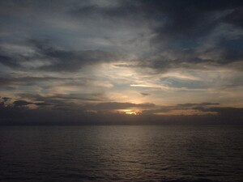

silè 
/silɔʔ/
v_rt.
“rise”
v.
for the sun or moon (egsilè, agent, eg><ø-) to rise (egsilaan, patient, eg><an-) to something
Enew kew e su egsilè e ka aldew.
Hey wake up everybody - The sun is shining.
Egsilaan e te aldew ka sinabeng ku su nalukatan nahud ka me bintana diyè te seled.
Cult. The sun rises in the east, the moon rises in the west.
Ant. lineb
Eng. sunrise; dawn; rise; eastern; bright; glare
OCM: Ethnometeorology (821)
DDP: Sun (1.1.1)
Online dict status: -
Usage level: M
Updated by: RJH,NJK,QDL
Last updated: 13/Oct/2009
"igsile" in text "Prophecy About Future"
This page last updated: 19/May/2012
Copyright © 2009-2010, Matigsalug Language Christian Association, Inc